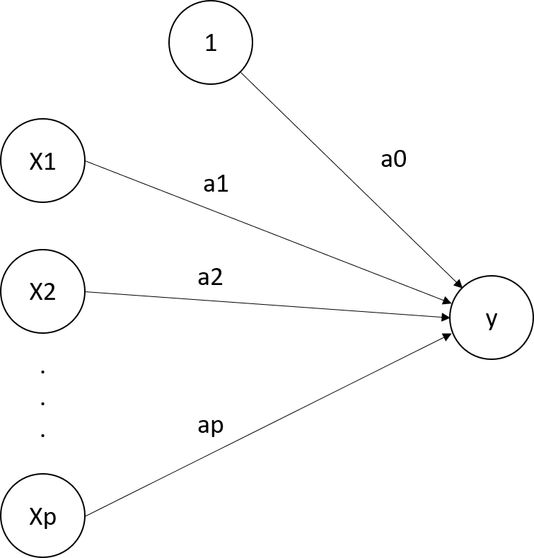

Linear & Logistic Regression
Linear regression
Linear regression
The prediction formula is \[f(x;\theta) = \theta_0 + \theta_1 x_{1} + \ldots + \theta_p x_{p}\]

The MSE and the OLS
The loss function is the mean squared error, MSE, \[\bar{\cal L}(\theta) = \frac{1}{n} \sum_{i=1}^n \{y_i - f(x_i;\theta)\}^2.\] The optimal parameter under this loss is called the Ordinary Least Squares, OLS, \[\hat{\theta} = \arg\min_{\theta} \frac{1}{n} \sum_{i=1}^n \{y_i - f(x_i;\theta)\}^2.\]
The OLS
To find the OLS, the algorithm is exact and the final solution can be explicitly computed with the matrix-operation \[\hat{\theta} = (X^TX)^{-1} X^T y,\] where
\(X\) is the so-called design matrix of size \(n\times (p+1)\) and whose \(i\)-th row contains \[[1,x_{i1},\ldots,x_{ip}],\]
\(y\) is the vector of length \(n\) whose \(i\)-th element is \(y_i\).
Logistic regression
Logistic regression
The logistic regression is a model for binary classification. Prediction formula is in several steps:
Compute the linear predictor \[z(x;\theta) = \theta_0 + \theta_1 x_{1} + \cdots + \theta_p x_{p},\]
Compute the probability prediction (sigmoid function): \[p(x;\theta) = P(Y=1 | X=x) = \frac{\exp\{z(x;\theta)\}}{1+\exp\{z(x;\theta)\}}.\]
Compute the prediction of the class: \[f(x;\theta) = \left\{ \begin{array}{ll} 1, & \mbox{if } p\geq 0.5,\\ 0, & \mbox{if } p < 0.5. \end{array} \right.\]
The sigmoid and the logit function
The logit function is the inverse of the sigmoid function and thus transforms \(p(x;\theta)\) to \(z(x;\theta)\). \[z(x;\theta) = \log \frac{p(x;\theta)}{1-p(x;\theta)}\]
The loss function uses the probabilities \(p(x;\theta)\) and not the final predictions. The loss is the cross-entropy also called negative log-likelihood: \[{\cal L}(y,p) = -y \log p - (1-y) \log (1-p).\] Interpretation,
If \(y=1\), we want \(p\) to be large (close to 1). The loss is \[{\cal L}(1,p) = - \log p\] It will be small indeed if \(p\) is large.
If \(y=0\), we want \(p\) to be small (close to 0). The loss is \[{\cal L}(0,p) = - \log (1-p)\] It will be small indeed if \(p\) is small.
Estimation
The overall loss is \[\bar{{\cal L}}(\theta) = -\frac{1}{n} \sum_{i=1}^n y_i \log p(x_i;\theta) + (1-y_i) \log \{1-p(x_i;\theta)\}.\] The \(\log\) in this formula can be in any base. Often,
Machine learners use \(\log_2\),
Statisticians use \(\ln\).
This has absolutely no consequence on the final result (all \(\log\) are equivalent here). But it can bring confusion from time to time.
Optimal parameters
To obtain the optimal parameters, the best algorithm is the Newton-Raphson algorithm. It requires
To compute the first and second derivatives of \(\bar{\cal L}(\theta)\),
To build a sequence of \(\hat{\theta}_k\) that converges to the optimal one using these derivatives.
This algorithm is very fast and efficient. However, there is no explicit formula for \(\hat{\theta}\), unlike the OLS. The optimal \(\hat{\theta}\) is sometimes called the maximum likelihood estimator, MLE. That terminology is however less usual among machine learners than statisticians.
Interpretation
Interpretation
Linear and logistic regressions are highly interpretable in that
the coefficients quantify the link between the features \(x\) and the outcome \(y\).
the certainty of the prediction can be quantify.
For the linear regression, coefficients are interpreted as slopes.
When the feature \(x_1\) increases by \(1\) unit, the outcome \(y\) increases in average by \(\theta_1\) units (same for all features \(1,\ldots,p\)).
A positive coefficient \(\theta_j\) means a positive linear association between the feature \(x_j\) and the outcome \(y\).
The larger the coefficients, the larger the association, in absolute value. (note: pay attention to the scale!)
For the categorical features, the coefficients estimate the average change in the outcome \(y\) when the feature switches from the reference level to any other level. It is thus a contrast with the reference level.
Note: one should not say that an increase in \(x_j\) causes an increase of the response. It is an association. The causality implies a direction and is more complex to establish.
Interpretation of the coefficients
For the logistic regression, because of the sigmoid transform, the interpretation of the coefficients is more difficult than with the linear regression:
With a positive \(\theta_j\), an increase of \(x_j\) is associated with an increase of the probability that \(y=1\).
The larger the coefficient, the larger the increase. However, it the increase is not linear and depends on the other features.
A negative coefficient means a decrease in the probability of the positive class (\(y=1\)).
For linear regression, certainty can be measured by prediction intervals. In practice, the main interest relies in the prediction interval for the future value1.
Let \(x\) be a set of new features, the point prediction for \(y(x)\) uses the estimate \(\hat{\theta}\): \[f(x;\hat{\theta}) = \hat{\theta}_0 + \hat{\theta}_1 x_1 + \cdots + \hat{\theta}_p x_p.\] Now, rather than a point estimate, we want to build an interval \([L,U]\) such that \[P(L \leq y(x) \leq U) = 1-\alpha,\] where \(\alpha\) is usually set to \(5\%\) for an interval at \(95\%\). To build this interval, we rely on probabilistic assumptions of the model.
Therefore, \[0.95 = P(L \leq y(x) \leq U) = P\left(\frac{L-f(x;\theta)}{\sigma} \leq e \leq \frac{U-f(x;\theta}{\sigma})\right).\] Using the normal distribution, we find that \[L-f(x;\theta) = -\sigma z_{1-\alpha/2}, \quad U-f(x;\theta) = \sigma z_{1-\alpha/2}.\] This gives \[L = f(x;\theta) -\sigma z_{1-\alpha/2}, \quad U = f(x;\theta) + \sigma z_{1-\alpha/2}.\] For \(\alpha=5\%\), this gives \[(L,U) = f(x;\theta) \pm 1.96 \sigma.\]
Certainty for linear regression
Using a plug-in estimate, this gives us a rough prediction interval (at \(95\%\)) of \[(\hat{L},\hat{U}) = f(x;\hat{\theta}) \pm 1.96 s,\] where \(s\) is the unbiased estimate of the standard deviation \[s^2 = \frac{1}{n-(p+1)} \sum_{i=1}^n \{y_i - f(x_i;\hat{\theta})\}^2.\] This prediction interval is however hardly used/implemented because
the estimate \(s\) carries uncertainty. If taken into account, the Student \(t_{n-(p+1)}\) distribution should be used.
the estimate \(\hat{\theta}\) carries uncertainty. If taken into account, the estimate of \(s\) should be changed to \(s \sqrt{1+x^T(X^TX)^{-1}x}\).
Both adaptations widen the interval.
Certainty for logistic regression
The probability provides an interpretation of the certainty the model provides on a classification. Consider:
\(\hat{y}=1\) with \(\hat{p} = 0.99\): the prediction is certain.
\(\hat{y}=1\) with \(\hat{p} = 0.53\): the prediction is uncertain.
In both cases, the predicted class is the same but the probability provides a more precise view on it: if the instance is far in the class or on the edge between the two classes. The prediction "Good" for a customer with a probability of \(0.51\) is uncertain. Alternatively, the prediction rule could set to a larger value than 0.5 to increase the certainty. Also, a model with a lot of predictions close to 0.5 is of considered as poor because of its uncertainty2.
Selection of variables
Occam’s Razor
A parsimony principle:
"All else being equal, the simplest explanation is the best one"
In other words, among two models with approximately the same prediction quality, choose the simplest one.
In practice, we remove from the model variables that do not impair too much the prediction quality.
Simplifying the model is a solution to overfitting. This will be studied later in the course.
The AIC (Akaike Information Criterion) is \[AIC = -2\hat{\ell} + 2k\] where
\(\hat{\ell}\) is the maximum log-likelihood and measure the goodness-of-fit,
\(k\) is the number of parameters and measure the model complexity.
Minimizing the AIC achieves a trade-off between the quality of prediction and the model complexity.
Akaike Information Criterion
For linear regressions,
The number of parameters is \(k=p+2\) with \(\theta_0,\theta_1,\ldots,\theta_p\) and \(\sigma\),
The log-likelihood part equals \[-2\hat{\ell} = n\ln 2\pi + n \ln \hat{\sigma}^2 + \frac{1}{\hat{\sigma}^2}\sum_{i=1}^n \left\{y_i - f(x;\hat{\theta})\right\}^2,\] where \(\hat{\sigma}^2 = (n-p-1)s^2/n\).
For logistic regressions,
The number of parameters is \(k=p+1\) for \(\theta_0,\theta_1,\ldots,\theta_p\),
The log-likelihood part equals \[-2\hat{\ell} = 2 \sum_{i=1}^n y_i \ln p(x_i;\hat{\theta}) + (1-y_i) \ln \{1-p(x_i;\hat{\theta})\}.\]
Variables selection with AIC
Automatic variable selection using stepwise minimization of the AIC can be performed. There are
Backward: start from the most complete model and try to remove variable one at a time (if it decreases the AIC)
Forward: start from the empty model and try to add one variable at a time (if it decreases the AIC).
Both: start to add or remove at each step.
At each step, all the models in competition are fitted. The procedure is computationally intense.
A different approach consists of penalizing the loss function so that, during the training of the parameters, the variable selection applies directly. The most common penalties are:
\(L_1\) penalty (LASSO) \[\min_\theta \bar{\cal L}(\theta) + \lambda \sum_{j=1}^p \vert \theta_j \vert\]
\(L_2\) penalty (Ridge) \[\displaystyle \min_\theta \bar{\cal L}(\theta) + \lambda \sum_{j=1}^p \theta_j^2\]
Usually, \(\theta_0\) is not penalized.
The penalty parameter \(\lambda \geq 0\):
If \(\lambda =0\), then there is no penalty.
If \(\lambda \longrightarrow \infty\), then \(\theta \longrightarrow 0\).
For intermediate values, some components of \(\theta\) will be small, pushed toward \(0\). This is equivalent to variable selection: setting \(\theta_j=0\) is equivalent to not including \(x_j\). Selection of \(\lambda\) can be done with cross-validation (see later).
Variable selection with penalization
\(L_1\) shrink some of the \(\theta_j\), set some \(\theta_j = 0\), select variables.
\(L_2\) shrink all the \(\theta_j\)’s, avoiding extremes \(\theta_j\), regularize \(\theta\).
Elastic net combines \(L_1\) and \(L_2\): \[\displaystyle \min_\theta \bar{\cal L}(\theta) + \lambda \left\{\alpha \sum_{j=1}^p \vert \theta_j \vert + \frac{1-\alpha}{2}\sum_{j=1}^p \theta_j^2\right\}\] with \(0 \leq \alpha \leq 1\),
If \(\alpha=0\), it is the ridge (\(L_2\))
If \(\alpha=1\), it is the LASSO (\(L_1\))
Often, \(\lambda\) is selected by the data (cv), while \(\alpha\) is set by the user.